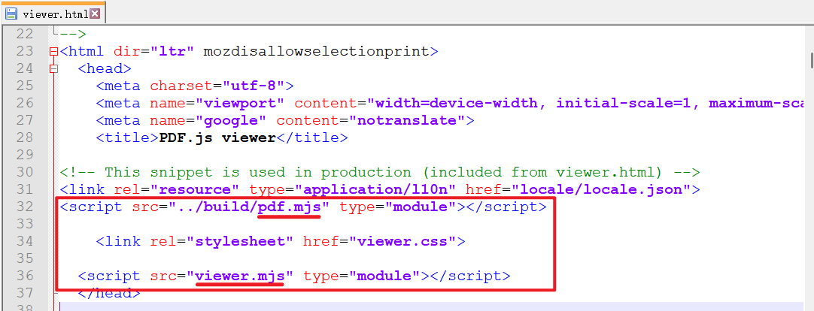

Hexo-博客搭建
该博客主要介绍使用Hexo工具在Github上搭建Next主题个人博客的简要过程，列举所参考的视频与帖子连接，同时汇总个人搭建过程中遇到的各种错误和解决办法。
参考资料
博客搭建所使用的部件如下：
- Github：用于博客线上浏览
- Git: 线上推送工具
- Hexo：用于管理本地博客内容、主题与线上推送
- Sublime Text：用于管理博客文件夹，无需来回跳转
博客搭建所用的参考视频为：
【1】hojun_cn|手把手教你搭建属于自己的hexo+github博客-BiliBili
博客美化参考的教程如下：
【1】Hexo-NexT
【3】如何优雅的使用Github Action服务来将Hexo部署到Github Pages - Hexo
【4】Hexo v7.0+的canvas-nest插件配置-Github
【5.2】Hexo的hexo-tag-cloud插件使用手册-Github
【7】HEXO笔记④-Hexo博客NexT主题设置RSS订阅 | Ten’s Blog
【8.1】hexo 的 Next 主题 中添加首页文章置顶功能及置顶图标 | ShallWe - 官方博客
【8.2】Hexo+Next8的升级踩坑之旅_next 8 config-CSDN博客
常用指令
Hexo创建本地博客仓库后，使用控制台或Git Bash Here输入指令进行博文管理，详见指令 | Hexo，以下简要介绍常用指令
网站生成–生成本地网站
1
$ hexo g
网站推送–推送至github
1
$ hexo d
创建本地端口
1
$ hexo s -p 5555
该指令将创建本地5555端口，可在浏览器中输入
localhost:5555进行查看，但并未推送至线上。
常见问题
虽然有视频参考，但作者在使用时仍然出现一些问题，在此种树帮后人乘凉。
问题速查
- 本地仓库初始化失败
- 仓库名不一致
- 无法在某个硬盘的根目录下创建仓库
- SSL证书报错
- 更改主题后生成时报错
- 主题包与配置文件内不一致
- 已生成缓存未更新
- 无法推送至Github仓库
- 新增侧边栏项目后出错
- 创建新标签后访问错误
- 自定义图标不显示
- GitHub端推送错误(无法访问镜像站，Fatal:502)
- 网页端公式渲染异常
插件版本
1 | hexo: 7.3.0 |
本地仓库初始化失败
原因1：在Github创建仓库时的仓库名与本地仓库名不一致。
举个栗子：作者在Github的仓库名为AAA，那么使用hexo init AAA指令时的本地仓库路径应该为C:\Blog，文件夹名称为AAA。
原因2：无法在某个硬盘的根目录下创建仓库。例如在C:文件夹下初始化将失败。
举个栗子：在本地文件夹下应该创建子文件夹，如C:\Blog或者你喜欢的其他名称。
原因3：SSL证书报错，如下。
1 | $ hexo init AAA |
解决办法：首先下载最新版本Git，某些旧版本可能会失败。其次，Git在下载后默认为Linux终端加密，使用以下指令修改配置。
1 | $ git config --global http.sslbackend schannel |
不建议使用以下指令：该指令关闭安全检查，可能会受到外部攻击。
1 | $ git config --global http.sslVerify false |
更改主题后生成时报错
此时进行本地查看，网页端将显示空白界面。生成阶段的报错信息如下：
1 | WARN No layout: 2025/04/09/hello-world/index.html |
原因1：主题包名称与_config.yml中不一致，检查文件名。
举个例子：作者使用next主题，在github上下载的主题包名称为xxxx_next_xxx形式。将主题包与_config.yml中修改为next或其他相同的名称即可。
原因2：原有缓存内容未更新。使用以下指令重新生成。
1 | $ hexo clean && hexo g |
无法推送至Github仓库
仓库分支名有误。Github默认仓库名曾由master修改为mian，
但Hexo默认分支为master。
解决办法：在_config.yml内找到branch分支，并修改为main:
1 | deploy: |
新增侧边栏项目后出错
1 | YAMLException: can not read a block mapping entry; a multiline key may not be an implicit key (4:1) |
原因1：文件的front-matter内存在中英文字符混用。
解决办法：使用英文字符，并且后跟空格。
1 | title: 关于 |
创建新标签后访问错误
1 | Cannot GET /about/ |
可能并未创建对应的文件夹，或者文件名称有误。
解决办法：new
page创建新文件夹，文件夹内的文件名必须为index.md
1 | $ hexo new page about |
并且注意，此时需要更改内部的tags，比如
1
2
3title: 关于
date: 2025-04-16 13:20:26
tags: about
自定义图标不显示
网络上大多数是旧版本Hexo 或者Next主题的配置方案，按照他们的步骤可能找不到相同的文件 … 如本节内4篇博客方案，均无法复刻。
【1】hexo next 解决自定义侧边栏用户社交链接小图标 custom sidebar social icon_next自定义图标-CSDN博客
原因：参照博客3发现可能涉及到不同版本Font Awesome(简称fa)图标库，V5和V6涵盖的图标数不同。其他图标可在iconfont图标库下载。
解决办法：next
v8.23.0版本_config.yml文件注释表明其已集成fa库，在链接6中搜索图标名，如bilibili。如果有结果，则可在Next主题配置文件中使用fab fa-bilibili，在.md文档内中按如下格式使用：
1 | <i class='fa-brands fa-bilibili'></i> |
但该版本Next主题中，即使从iconfont下载图标代码也难以插入到本地.css或者.styl文件。
【6】cdnjs.cloudflare.com/ajax/libs/font-awesome/6.4.0/css/all.min.css
【7】fa-brands fa-bilibili — Tryit Editor
网页端无法预览PDF
在使用Hexo的过程中发现除去可以插入图像文件外，还可以插入pdf文件进行在线预览。类似以下样例，一个网页内插入了一个方框显示pdf内容：

Fig.1 PDF预览(参考资料1)
博主预期在Next主题下实现类似功能。
解决方案：
首先在next/_config.yml主题配置文件内使能pdf配置。
1 | pdf: |
方案一：hexo-pdf插件（不推荐）
通过搜索其他人搭建个人博客的经验，部分作者使用hexo-pdf插件用于显示pdf文件，尝试该方案。
在博文根目录下安装插件
1
$ npm install --save hexo-pdf
在
source文件夹内创建pdf文件夹，在.md文档内插入以下语句。此方式在本地生成后弹出了IDM文件下载链接，未出现预览窗口，如下图。如果显示
Cannot GET /2025/06/04/Test.pdf说明文件路径有问题1
{% pdf /pdf/Test.pdf %}

Fig.2 弹出下载界面，无预览尝试更改文件夹，在
_post文件夹下创建与.md同名的文件夹 ，在.md文档内插入以下两句语句。1
{% pdf ./Test.pdf %}
1
{% pdf Test.pdf %}
结果与第2步放入
source文件夹类似，本地预览弹出文件下载框，但是无法加载出内容。该方案推送至Github后可正常浏览，效果如下：
缺点：该方案只能在部署到服务器后在PC端预览，手机端查看博文则会显示文件丢失。也无法在本地生成后查看效果。
方案二：PDF.js工具（推荐）
有很多博主在个人博客使用这个pdf工具，但多数应用主题是butterfly或者fluid主题，博主希望尝试应用在next主题上，便于在手机与电脑端实现双端浏览。
下载PDF.js工具包，博主选择下载modern browsers v5.3.31版本，点击此处下载其他版本
在next主题，存放解压文件
在博客根目录的
_config.yml文件中设置，取消渲染1
2skip_render:
- pdfjs/**/*使用以下代码插入pdf，其中
src参量的/pdfjs/web/viewer.html为预览窗口，后面紧跟的file=https://MicroPrism.github.io/2025/04/09/Hexo-Build_Blog/Test.pdf"是Github上的文件路径。1
2
3
4
5
6<iframe
src="/pdfjs/web/viewer.html?file=https://MicroPrism.github.io/2025/04/09/Hexo-Build_Blog/Test.pdf"
width="80%"
height="750"
frameborder="0">
</iframe>此种方式部署到Github之后出现404 File Not Found的文件无法加载的错误，如下图：

Fig.3 404 File Not Found
最初博主误认为是和大多数博主一样出现的文件跨域问题，但发现https://MicroPrism.github.io/2025/04/09/Hexo-Build_Blog/Test.pdf网页可以单独打开，因此推测可能是文件加载路径出错，也就是viewer.html路径出错。
查找原因时发现该路径被博主多写了一个
pdfjs/pdfjs/..，而正确路径需要和pdfjs的存储路径对应，应为
pdfjs/web/viewer.html，至此问题解决。
查看
viewer.html源码，能看到PDF.js工具在4.0版本开始后引用了pdf.mjs和viewer.mjs两个资源文件，如下图：
Fig.4 v5.3.31 viewer.html资源引用
在此之前的版本则使用.js资源文件，如下图：

Fig.5 v3.11.174 viewer.html资源引用
效果预览如下：
打开
web/viewer.mjs资源文件，更改以下两个配置值为true：1
2
3
4
5
6
7
8disableAutoFetch: {
value: true,
kind: OptionKind.API + OptionKind.PREFERENCE
},
disableStream: {
value: true,
kind: OptionKind.API + OptionKind.PREFERENCE
},该措施可以实现pdf文件的按需加载，提升观感与加载速度。
其他人的博客上有提到文件跨域导致的文件无法显示，但截止目前，博主没有遇到此问题，如果遇到，请参考第6条参考资料。
参考资料：
- hexo 中如何插入pdf | 智贤
- hexo中插入PDF |知乎
- The Details Usage
of the Hexo Next-Theme Plugin
next-pdf| Poetry Continent - hexo博客显示pdf | robot-x Blog
- Hexo内嵌PDF.js | 哔哩哔哩
- pdf.js｜CSDN博客
GitHub端推送错误(Fatal:502)
博主在先前使用Hexo部署博文时，直接使用在git
bash中使用推送命令$ hexo d即可把当前的文档推送到服务器，并且在线查看。
而本次typora完成文档编辑后生成网页，本地端口预览正常，但部署至github时报错，大致报错信息如下：
1 | fatal: unable to access 'https://github.com/MicroPrism/MicroPrism.github.io.git/': The requested URL returned error: 502 |
差异分析：
- 相对于上一次博客推送，本次使用ios手机热点，运营商为中国联通，而上次连接单位的wifi
- 此次推送博文以html语法插入了图片(2026.01.03更新下方代码块已作废，请以 公式渲染异常一节内的为准)
1 | <div> <!--块级封装--> |
解决办法：
在此优先将解决办法写在此处，为其他人提供参考。
根据报错信息，确认与服务器联通状态。
1
$ ping github.com
能ping通说明不是github服务器问题。
尝试使用ssh访问github服务器
1
$ ssh -T git@github.com
如果能访问成功，说明本地密钥和github能匹配，连接异常不是密钥问题。连接正常时显示以下信息：
1
Hi repo-name! You've successfully authenticated, but GitHub does not provide shell access.
3.更改推送时的repo。打开hexo根目录
_config.yml文件，更改为下方样式，其中repo-name为自己的仓库名。1
2
3
4
5deploy:
type: git
repo: git@github.com:repo-name/repo-name.github.io.git ##更换为ssh推送
#repo: https://github.com/repo-name/repo-name.github.io.git ##https推送
branch: main至此，问题解决，有兴趣的可以观察下方的问题分析。
问题分析：
博主首先对问题最直观的定位是插入图片的语法不统一导致的异常。相对于大多数网友选择的直接插入的方案，比如：
1 |  |
我选择使用html语法插入，这种语法有几个好处：
- 参数和提示信息更多。比如可以调节图片的位置，center、left、right。或者缩放比例，再或者是图片无法加载的提示信息。
- 可以加入对图片的解释，对于曲线类的图片，有题注说明会更清晰。
- markdown和localhost都可以直接预览。
随后到hexo官方查阅故障排除 | Hexo的资料，搜索关键词“somthing wrong”定位到模型渲染错误一节，认为是语法错误，按其意见尝试修改，见下方第1点。同时在网络上搜索使用html语法插入图片的相关问题与解决方案，逐步查找原因：
- 在html语法段加上
{{}}，仍然异常。 - 删除所有html语法，仍然异常。
- 删除 .md文件名的空格，仍然异常。
到此，即可排除是文件名空格、中文字符解析、html语法兼容的问题。后来发现something wrong是很笼统的错误提示，需要向前或向后找更详细的提示。
考虑到hexo推送机制底层还是调用git工具，那么如果出现问题，作为hexo的子集，git应该能获得更多错误信息。果然搜索到类似的帖子，在此进行概括：
错误代码502意味着网络问题，可能是服务器端关闭或者是访问端的网络波动。首先需要检查你的防火墙、代理、以及网关是否拦截了访问。
从这段解释里引出了对场景变化的第二个考虑，网络变化-从单位的网络变为手机热点，可能是运营商拦截？
但是本地却能ping通github。所以进一步考虑到是否是密钥过期，或者是电脑上的密钥被清理。（早期github曾使用过短期密钥，因为密钥过期导致无法推送）
随后建立新的密钥：
1 | $ ssh-keygen -t rsa -C "you-email@emil.com" |
回车保存在默认路径下，覆盖原有文件。使用下方指令copy密钥值粘贴到github端：
1 | $ clip < ~/.ssh/id_rsa.pub |
新建密钥之后将ssh连接的端口从默认22修改为不常被拦截的443端口，用记事本或者notepad等打开git安装目录下/etc/ssh/ssh_config文件，在末尾加入：
1
2
3
4
5
6Host github.com
User git
Hostname ssh.github.com
PreferredAuthentications publickey
IdentityFile ~/.ssh/id_rsa
Port 443
重新使用ssh访问github，记得输入yes确认：
1 | $ ssh -T git@github.com |
截止到此，ssh访问应该不会出问题了。但是hexo部署仍然有问题，继续查找原因，发现ssh访问没问题的话，可能出在git端的配置上。
查找网络资料，发现git可以通过以下两条指令切换https、或者ssh协议：
1 | $ git remote set-url origin https://github.com/repo-name/repo-name.github.io.git ##切换https协议 |
类比思考，hexo是将协议集成在了配置文件
_config.yml内，如下方配置：
1 | # Deployment |
因此，将修改repo参数即可修改deploy时的协议，更换为ssh协议后即推送成功。
参考资料：
【1】故障排除 | Hexo
【3】GitHub使用SSH连接以及生成修改添加密钥详细过程 | zolich - 博客园
【4】The requested URL returned error 502, corporate? | Stack overflow
【5】解决将Hexo部署到GitHub时报错：Error: Spawn failed_hexo无法部署到github | CSDN博客
【6】git相互切换ssh和http协议(一看就懂版)_git 修改 ssh url | CSDN博客
网页端公式渲染异常
解决日期：2026.01.03
此问题博主在最初并没有发现（不是太久没写博客），近期更新博客本地浏览时发现部分公式块以源代码形式显示，比如：
1 | $$ |
先给出博主的解决方案，删除原有的渲染插件hexo-renderer-marked，下载新插件
hexo-renderer-pandoc。
1 | $ winget install --source winget --exact --id JohnMacFarlane.Pandoc |
随后重启git bash窗口，更新环境变量和签名。
1 | # 查看pandoc是否安装成功 |
执行完以上指令序列，分别对hexo和next主题做如下配置
1 | # hexo根目录_config.xml |
1 | # theme/next目录_config.xml |
设计好.md文档后，在文档title添加以下选项，重新生成即可。
1 | mathjax: true |
或许会出警告，但并不影响显示效果：
1 | [WARNING] Could not convert TeX math \gamma_{up} = \frac{Q_{up}}{\int_{t_0}^{t_1} P_{0}(t) dt} , rendering as TeX |
此处更换渲染器后，博文内的图片显示异常，直接显示为原始html块代码。（果然，当代码能动就不要改bug）
最终查出的原因是：html代码块使用<div> </div>插入图片，在typora中加载无误。但pandoc渲染器或许自带一些bug(Github上的issue似乎到现在都没有解决)，注释、回车/空格似乎都会影响识别，影响渲染结果：
因此插入图片可复制以下模板：
1 | <div> |
尽量不要插入过多空格和注释。此处参阅以下两篇博文，可以配置pandoc渲染时的参数，但最终使用与否并无差异，因此保留备用。
原因分析：
博主的文档在本地使用Typora编辑器编写，可以实时渲染出图、出公式，方便好使。
查找网络资料后发现Markdown文档可以渲染latex公式，但只支持基本的符号/公式，hexo生成的html文件显示原始文本。其中，两者差异在于hexo默认使用hexo-math插件，而typora使用hexo-filter-mathjax（具体为Katex），因此首先更换渲染引擎为mathjax。
其次遇到新问题，默认渲染器为hexo-renderer-marked，其功能不全：不支持emoji扩展、不支持mathjax插件扩展。参考网络资料，有以下两种选择：
hexo-renderer-kramedhexo-renderer-pandoc
最初博主尝试kramed，但安装后需调整rule.js文件。参考此博文配置后，或许某处操作不正确，导致原有的公式渲染没解决，还出现新问题，上下角标不能使用，因此找到pandoc作为替代品。
pandoc依赖外部渲染引擎，需要下载安装单独的程序。但操作简单，渲染效果还不错，本文的解决方案主要参考Barkure、Like两位的博文，对其方案做了融合，小白可用。
参考资料：
【1】hexo博客next主题添加对数学公式的支持_hexo next 公式-CSDN博客
【2】彻底解决 Hexo 的数学公式渲染问题 | Barkure
【3】Hexo Next 博客 Markdown 数学公式完全指南 | 浩跃霖希的博客
【5】render latex in hexo blog | Like’s Blog
使用技巧
博客分类
1 | categories: |
此时这篇文章同时包括三个分类： PlayStation 和
Games 分别都是父分类 Diary 的子分类，同时
Life 是一个没有子分类的分类。
修改分类间隔符
如果希望保留多语言支持，可以修改翻译文件中的
symbol.comma 定义：
找到主题的语言文件（如中文）：
1
themes/next/languages/zh-CN.yml
修改
symbol.comma的值：1
2symbol:
comma: " / " # 将逗号改为斜杠
————————— End —————————
且视他人之疑目如盏盏鬼火，大胆地去走你的夜路。–史铁生 《病隙随笔》